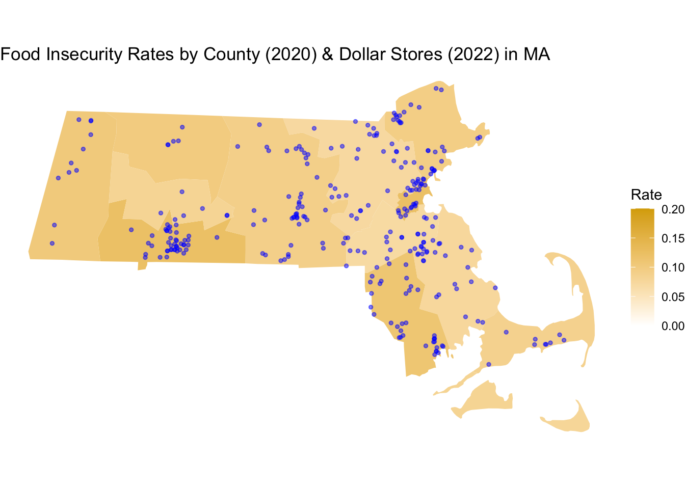

I mapped every dollar store in Massachusetts over county level food insecurity rates. To collect these locations, I had to scrape each address from the store directories of the biggest dollar store chains in the country. I’ve shared a sample of the scraping code here.

# Load packages
library(rvest)
library(tidyverse)
library(stringr)
# Read in the URL and extract the HTML
url <- "https://www.dollargeneral.com/store-directory"
html <- read_html(url)
# Scrape the state links
div_elements <- html %>%
html_nodes("div[class='state-list-item']")
states <- div_elements %>%
html_nodes("a") %>%
html_attr("href")
# Create a data frame for the state links
states_df <- data.frame(states)
states_df <- states_df %>% filter(states != "/content/dollargeneral/en/store-directory/.html")
# Create an empty vector to store the city links
cities <- c()
# Loop through the state links
for (i in 1:length(states_df$states)) {
# Read in the URL and extract the HTML
url <- paste0("https://www.dollargeneral.com", states_df$states[i])
html <- read_html(url)
# Scrape the city links
div_elements <- html %>%
html_nodes("div[class='city-list-item']")
city <- div_elements %>%
html_nodes("a") %>%
html_attr("href")
# Append the city links to the vector
cities <- c(cities, city)
}
# Create a data frame for the city links
cities_df <- data.frame(cities)
# Create a data frame for the addresses
addresses <- data.frame()
for (i in 1:length(cities_df$cities)) {
# Read in the URL and extract the HTML
url <- paste0("https://www.dollargeneral.com", cities_df$cities[i])
# Extract elements with xpath
div_elements <- html %>% html_nodes('div[class="store__card"]')
# Check how many 'p' tags
num_p_tags <- div_elements %>% html_nodes("p") %>% length()
# Save each text element to a vector
text_vector <- vector()
for (i in 1:num_p_tags) {
text <- div_elements %>% html_nodes("p") %>% .[[i]] %>% html_text()
text_vector <- c(text_vector, text)
}
# Every third item, add to new row in a data frame
store_info <- data.frame(matrix(text_vector, ncol = 3, byrow = TRUE))
colnames(store_info) <- c("address", "city_state_zip", "phone")
# Append the store info to the complete data frame
addresses <- merge(addresses, store_info, all.x = T, all.y = T)
}
addresses[c("city", "state_zip")] <- str_split_fixed(addresses$city_state_zip, ",", 2)
addresses$state_zip <- trimws(addresses$state_zip, "l")
addresses[c("state", "zip")] <- str_split_fixed(addresses$state_zip, " ", 2)
addresses <- addresses[-c(2, 5)]
addresses <- addresses[,c(1,3,4,5,2)]
write_delim(addresses, "dollarGeneral.csv", delim = ",")